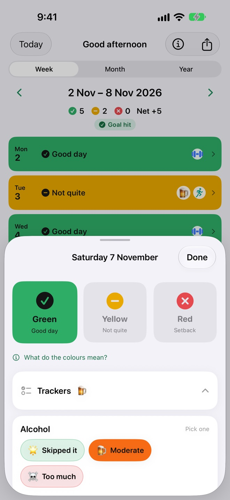
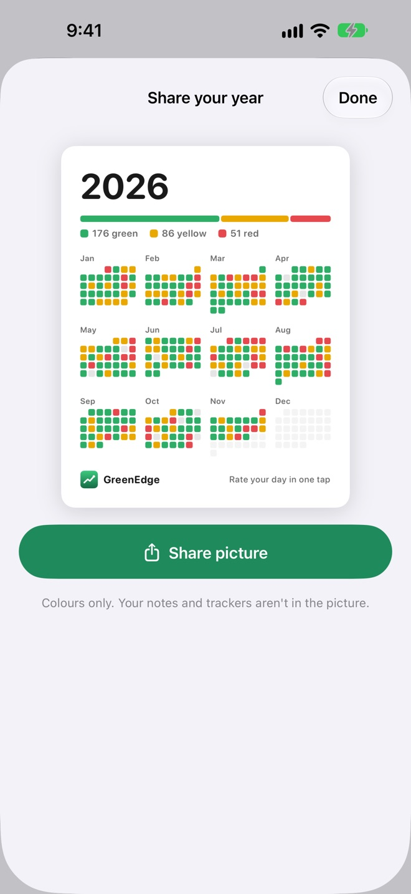

Track the part you control.
A big goal takes months, and most days there's no progress to see. So make the day the goal: did you show up the way you want to? Rate it in one tap.
Keep having green days and, in time, you become the person you want to be.
Coming to the App StoreFor iPhone. Free to use, with an optional Premium.
Why rate your days?
Most tracking looks at how you feel, or at what you got. What sits between them is what you did, and that's the part you can change today.
Say you're trying to lose weight. The scale can go up after a week you did everything right. So you don't rate the scale, and you don't rate your mood. You rate whether you trained and ate the way you meant to. That's a green day, whatever the number says.
- Something you can win today. The result may be months off. A green day is available tonight.
- Evidence about what works for you. See what goes with your green days, and what goes with the red ones.
- The link back to results. Your days beside your weight, sleep and more from Apple Health.




One tap a day
At the end of the day, pick a colour: green for a good day, yellow for not quite, red for a setback. It's your own honest judgement, against your own standards. Add a note if you like, and fill in a missed day any time.
Track the details
Make your own trackers for whatever shapes your days: drinks, training, sleep, caffeine, anything. Log them in the same panel as the colour.
See the trend
Week, month and year views, a running score, streaks and optional goals. Share a week, a month or your year as a picture: colours only, never your notes.
Private by design
No account, no servers, no ads, no tracking. Your days live on your iPhone and sync through your own private iCloud. The developer can't see them.
GreenEdge Premium
Rating your days, trackers, the calendar and the Summary are free, with no limits. Premium is optional and adds:
- Insights: what your good days have in common, in plain sentences. For example: "85% green on Weights days, usually 45%." Plus how this week, month or year compares with your normal.
- Health: your days beside your weight, sleep, activity and heart from Apple Health. For example: "Your green days have averaged 0.5 kg lower than your red days." GreenEdge only reads from Apple Health and never writes to it. You can't enter health data in GreenEdge, so this is only useful if a scale, watch or another app already saves to Apple Health.
Monthly with a 1-month free trial for new subscribers, yearly, or a one-time Lifetime purchase. Prices are shown in the app.
GreenEdge is a personal tracker for everyday goals and habits. It isn't a medical or mental health tool. It doesn't diagnose, treat or monitor any condition, and it isn't a substitute for professional help.
Press kit
GreenEdge is made by one independent Australian developer. It began when its maker, frustrated at working towards big goals without seeing progress, made the day itself the goal: rate each day, and see months later what the good ones had in common.
- App icon (1024 × 1024)
- Screenshots with captions: week, a day, year, summary, compare, patterns, health, sharing
- Video: 46 seconds (American spelling) or a 29-second cut (all 1080 × 1920, with music)
- Plain screenshots: week, year, a day, patterns, sharing


Press questions: greenedgeapp@gmail.com